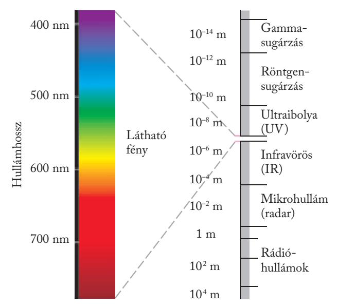
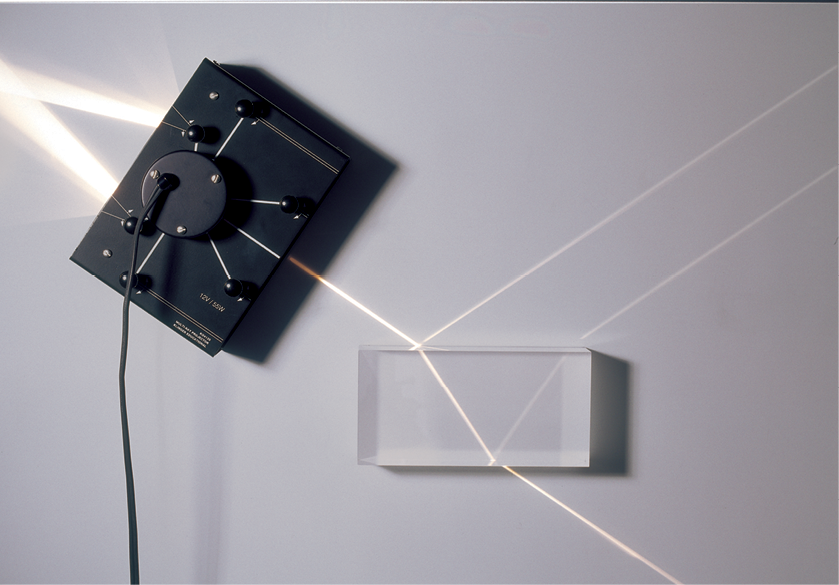

Fizika – Optika
Áttekintés: fény, tükrök, lencsék, törés és visszaverődés.
1. - Optika és Fénytörés
Optika alapjai
Az optika a fény természetével, terjedésével és a különböző anyagokkal való kölcsönhatásával foglalkozó fizikai tudományág.
Fényvisszaverődés
Amikor a fény egy felületre érkezik, visszaverődhet. A sík felületekről történő visszaverődés során a beesési szög megegyezik a visszaverődési szöggel.
Fénytörés
Ha a fény két különböző optikai sűrűségű közeg határához érkezik, irányt változtathat, ezt nevezzük fénytörésnek. A törés mértéke a közeg törésmutatójától függ.
A felületre merőleges megvilágítás esetén azt tapasztaljuk, hogy a félhengerbe irányváltoztatás nélkül hatol be a fénysugár.
Törésmutató:
A fény két közegbeli sebességeinek hányadosát törésmutatónak nevezzük
Valamely fényáteresztő anyagnak a légüres térre vonatkoztatott törésmutatóját abszolút törésmutatónak nevezzük, és n-nel jelöljük. (A fény levegőben, illetve vákuumban gyakorlatilag azonos sebességgel halad.)
Lencsék és képalkotás
A lencsék két fő típusa a gyűjtőlencse és a szórólencse. A gyűjtőlencse párhuzamos fénysugarakat egy pontba fókuszál, míg a szórólencse széttartóvá teszi azokat.
Környezetünk tárgyainak többsége másodlagos fényforrás. A tárgy pontjairól induló, enyhén széttartó fénysugarak homogén közegben irányváltoztatás nélkül jutnak a szemünkbe. Ilyenkor a tárgyat ott látjuk, ahol valójában van. Optikai képalkotás akkor történik, ha a fénysugarak irányát fényvisszaverő felület vagy fénytörő közeg megváltoztatja. Ilyenkor a tárgynak a képét látjuk.
Optikai eszközök
Az optikai eszközök, mint például a mikroszkópok és távcsövek, lencsék és tükrök segítségével nagyítják vagy fókuszálják a fényt, hogy részletesebb képet kapjunk tárgyakról.